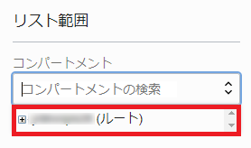
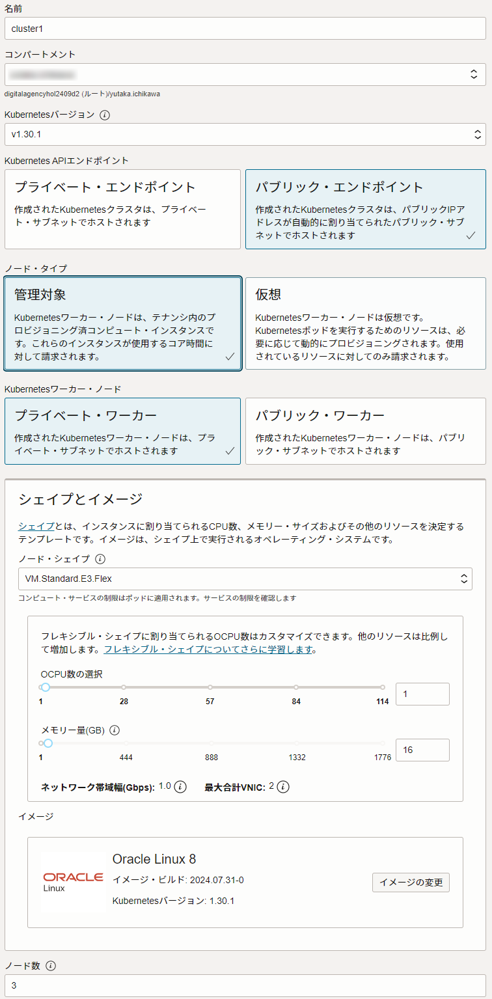
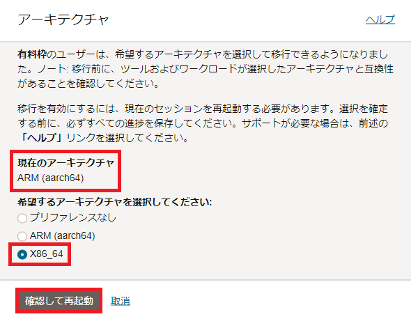
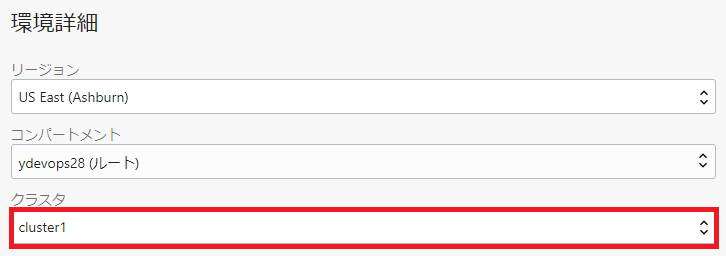
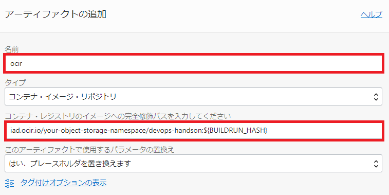
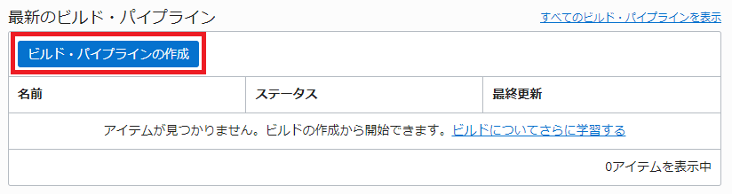
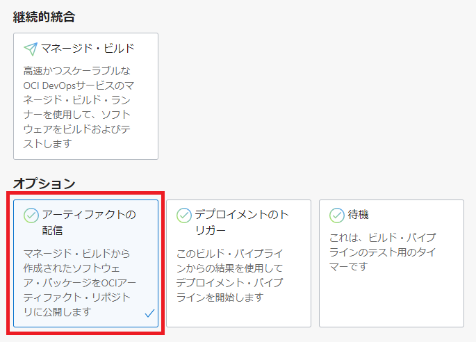
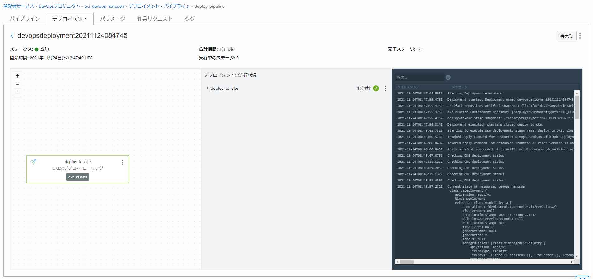

OCI DevOpsは、OCI上にCI/CD環境を構築するマネージドサービスです。ここでは、Oracle Container Engine for Kubernetes(OKE)サービスを利用したKubernetesクラスタの構築、アーティファクト環境とOCI DevOpsのセットアップ、CI/CDパイプラインの実装と実行までの手順を記します。
この手順を実施することで、OCI DevOpsを利用したコンテナアプリケーション開発におけるCI/CDを学習できます。
Oracle Container Engine for Kubernetes(OKE)について
Oracle Container Engine for Kubernetesは、Oracle Cloud Infrastructure(OCI)で提供される、完全に管理されたスケーラブルで可用性の高いマネージドのKubernetessサービスです。
詳細はこちらのページをご確認ください。
前提条件
- 環境
- OCI DevOps事前準備が完了していること
全体構成
以下の図にある環境を構築することがゴールです。環境構築後、サンプルソースコードを変更して、「git push」コマンド実行をトリガーにCI/CDパイプラインの実行、OKEクラスタ上にサンプルコンテナアプリケーションのデプロイまでの工程が、自動で行われることを確認します。

作業構成は、「事前準備」と「OCI DevOps 環境構築」の2構成です。
「事前準備」では、冒頭で紹介したOKEを利用したKubernetesクラスタを構築します。そして、OCI DevOpsサービスを利用する上で必要となる認証トークン設定、サンプルアプリケーションの取得、OCI DevOpsでOKEクラスタを利用するための動的グループ・ポリシーの設定を行います。
「OCI DevOps 環境構築」では、デプロイ先となるOKEクラスタの登録、コード・リポジトリとアーティファクト・レジストリの設定と管理、OCI DevOpsのパイプラインとなるビルド・パイプラインとデプロイメント・パイプラインの構築、パイプラインを自動化させるためのトリガー機能の設定、最後にソースコードの変更および「git push」コマンド実行を契機に、構築したパイプラインの稼働とデプロイされたアプリケーションの稼働を確認します。
ここで、関係する機能、サービスを整理しておきます。
コード・リポジトリ
コード・リポジトリは、ソースコードをバージョン管理できるOCI DevOpsの機能の一つです。GitHubやGitLabと同じようにリポジトリを作成して、ソースコードのバージョン管理をしながら効率的に開発を行えます。
アーティファクト・レジストリ
アーティファクト・レジストリは、ソフトウェア開発パッケージを格納、共有および管理するためのOCIのサービスです。OCI DevOpsと統合して利用します。
詳細はこちらのページをご確認ください。
コンテナレジストリ
コンテナレジストリは、コンテナイメージを保存および共有するための専用のレジストリです。OCIには、Oracle Cloud Ifrastructure Registry（OCIR）というコンテナイメージ専用のレジストリサービスがあります。OCI DevOpsと統合して利用します。
詳細はこちらのページをご確認ください。
事前準備の流れ
- 1.OKE セットアップ
- 2.認証トークン セットアップ
- 3.サンプルアプリケーション取得
- 4.ポリシーの設定
1.OKEセットアップ

1-1 OCIダッシュボードからOKEクラスタの構築
3ノード、1クラスタとして、OKEクラスタを構築します。 左上のハンバーガーメニューを展開して、「開発者サービス」から「Kubernetesクラスタ(OKE)」を選択します。

プルダウンメニューから「xxxxxx（ルート）」を選択します。
選択されている場合は、そのまま進んでください。

「クラスタの作成」ボタンをクリックします。

「クイック作成」が選択されていることを確認して、「ワークフローの起動」ボタンをクリックします。

以下の内容であることを確認します。
- 名前：cluster1
- コンパートメント：ご自身の対象コンパートメント
- Kubernetes APIエンドポイント:パブリック・エンドポイント
- ノード・タイプ:管理対象
- Kubernetesワーカー・ノード:プライベート・ワーカー
- ノード・シェイプ：VM Standard.E3.Flex
- OCPU数の選択: 1
- メモリー量（GB）： 16
- イメージ： Oracle Linux 8

Kubernetesバージョンについて
上記のスクリーンショットに表示されているKubernetesバージョンと実際にコンソールに表示されているKubernetesバージョンは異なる可能性があります。
このハンズオンでは、Kubernetesバージョンは特に問わないので、コンソール上で選択されているデフォルトのバージョンで進めてください。
画面「次」ボタンをクリックします。

画面「クラスタ作成」ボタンをクリックします。

画面「閉じる」ボタンをクリックします。

黄色の「作成中」から緑の「アクティブ」になることを確認します。「アクティブ」であればクラスタ作成は完了です。

1-2 Cloud Shellを利用してクラスタを操作
Cloud Shell は、ARM(aarch64)とX86_64のアーキテクチャを選択できます。こちらのチュートリアルは、X86_64をベースに構成されています。そのため、アーキテクチャのタイプを確認します。もし、ARM(aarch64)が選択されている場合は、X86_64に変更して、Cloud Shell を再起動します。
最初に、「アクション」-「アーキテクチャ」選択します。

「現在のアーキテクチャ」が ARM(aarch64) の場合は、X86_64 を選択して、「確認して再起動」ボタンをクリックします。
「現在のアーキテクチャ」が X86_64 の場合は、そのまま、「取消」を選択してください。

Cloud Shell 再起動後、「アクション」-「アーキテクチャ」選択します。そして、X86_64 であることを確認して、「取消」を選択します。

Cloud Shellを利用して、作成したKubernetesクラスタに接続します。
「クラスタへのアクセス」ボタンをクリックします。

「Cloud Shellの起動」ボタン、「コピー」リンクテキスト、「閉じる」ボタンの順にクリックします。

Cloud Shell起動後、「コピー」した内容をペーストして、Enterキーを押します。

以下コマンドを実行して、3ノードの「STATUS」が「Ready」になっていることを確認します。
kubectl get nodes
コマンド結果
NAME STATUS ROLES AGE VERSION
10.0.10.141 Ready node 6m33s v1.21.5
10.0.10.212 Ready node 6m8s v1.21.5
10.0.10.231 Ready node 6m23s v1.21.5
以上でOKEクラスタの構築は完了です。
2.認証トークン セットアップ
右上にある「プロファイル」アイコンをクリックして、プロファイル名を選択します。

左メニュー「認証トークン」を選択します。

「トークンの作成」をボタンをクリックします。

「説明」に「oci-devops-handson」と入力して、「トークンの生成」ボタンをクリックします。

「コピー」をクリックして、「閉じる」ボタンをクリックします。 コピーした認証トークンは、後の手順で必要となるので、テキストエディタなどにペーストしておきます。

以上で、認証トークンの作成は完了です。
3.サンプルアプリケーション取得
ここでは、サンプルアプリケーションをダウンロードします。
上部メニューの「Cloud Shell」アイコンをクリックして、Cloud Shellを起動します。
起動画面

起動後、以下コマンドを実行します。
wget https://orasejapan.objectstorage.ap-tokyo-1.oci.customer-oci.com/n/orasejapan/b/oci-devops-handson/o/oke%2Foci-devops-oke.zip
コマンド結果
--2021-12-06 07:41:06-- https://orasejapan.objectstorage.ap-tokyo-1.oci.customer-oci.com/n/orasejapan/b/oci-devops-handson/o/oke%2Foci-devops-oke.zip
Resolving objectstorage.uk-london-1.oraclecloud.com (objectstorage.uk-london-1.oraclecloud.com)... 134.70.60.1, 134.70.64.1, 134.70.56.1
Connecting to objectstorage.uk-london-1.oraclecloud.com (objectstorage.uk-london-1.oraclecloud.com)|134.70.60.1|:443... connected.
HTTP request sent, awaiting response... 200 OK
Length: 1112595 (1.1M) [application/x-zip-compressed]
Saving to: ‘oke%2Foci-devops-oke.zip’
100%[=======================================================================================================>] 1,112,595 3.29MB/s in 0.3s
2021-12-06 07:41:06 (3.29 MB/s) - ‘oke%2Foci-devops-oke.zip’ saved [1112595/1112595]
ダウンロードしたzipファイルを解凍します。
unzip oke%2Foci-devops-oke.zip
以下のメッセージが表示された場合は、「N」を入力してEnterキーを押します。
Archive: oke%2Foci-devops-oke.zip
replace __MACOSX/._oci-devops-oke? [y]es, [n]o, [A]ll, [N]one, [r]ename: N
「oci-devops-oke」というディレクトリがあることを確認します。
ls
oci-devops-oke
4.ポリシーの設定
ここでは、事前準備に追加で必要なポリシーの設定を行います。
追加で必要となるポリシーは以下となります。
| ポリシー | 説明 |
|---|---|
| Allow dynamic-group OCI_DevOps_Dynamic_Group to manage cluster-family in compartment id コンパートメントOCID | OCI DevOpsがOKEを管理できるようにするポリシー |
今回のハンズオンでは、スクリプトを利用して、ポリシーを設定します。
スクリプトは先ほど解凍した関連資材に含まれています。
Cloud Shellを起動し、以下のコマンドを実行します。
chmod +x oci-devops-oke/prepare/prepare.sh
スクリプトを実行します。
./oci-devops-oke/prepare/prepare.sh
コマンド結果
ocid1.tenancy.oc1..xxxxxxxxxxxxxxxxxxxxxxxxxxxxxxxxxxxxxxxxxxxxxxxxxxxxxxxxxxxx
{
"data": {
"compartment-id": "ocid1.tenancy.oc1..xxxxxxxxxxxxxxxxxxxxxxxxxxxxxxxxxxxxxxxxxxxxxxxxxxxxxxxxxxxx",
"defined-tags": {
"Oracle-Tags": {
"CreatedBy": "oracleidentitycloudservice/xxxxxxxxxxx@xxxxx",
"CreatedOn": "2021-11-18T07:41:50.746Z"
}
},
"description": "OCI_DevOps_Policy",
"freeform-tags": {},
"id": "ocid1.policy.oc1..xxxxxxxxxxxxxxxxxxxxxxxxxxxxxxxxxxxxxxxxxxxxxxxxxxxxxxxxxxxx",
"inactive-status": null,
"lifecycle-state": "ACTIVE",
"name": "OCI_DevOps_Policy",
"statements": [
"Allow dynamic-group OCI_DevOps_Dynamic_Group to manage cluster-family in compartment id ocid1.tenancy.oc1..aaaaaaaatoseshh5pf6ujhbofmersp62iui4wx2iymfvpeso7dzg2mxqfafq"
],
"time-created": "2021-11-18T07:41:50.880000+00:00",
"version-date": null
},
"etag": "31c9339700c6132a1b6205df041ad52fcf66be51"
}
これで、ポリシーの設定は完了です。
以上で、事前準備は完了です。
OCI DevOps 環境構築
- 1.環境
- 2.コード・リポジトリ
- 3.アーティファクト
- 4.デプロイメント・パイプライン
- 5.ビルド・パイプライン
- 6.トリガー
- 7.パイプラインの実行
- 8.デプロイの確認
1.環境

ここからは、事前準備で構築したDevOpsインスタンスに対して操作を行います。
OCI Console 左上のハンバーガーメニューから、開発者サービス > DevOps > プロジェクトと選択します。

oci-devops-handsonを選択します。

OCI DevOpsからOKEクラスタにアプリケーションのデプロイを行うために、OKEクラスタを登録します。
「環境の作成」を選択します。

「環境タイプ」で「Oracle Kubernetesエンジン」を選択、「名前」で「oke-cluster」を選択します。

「次」ボタンをクリックします。

「クラスタ」で「cluster1」を選択します。

「環境の作成」ボタンをクリックします。

パンくずリストから「oci-devops-handson」をクリックします。

以上で、環境の作成は完了です。
2.コード・リポジトリ

2-1.コード・リポジトリの作成
OCI DevOpsの「コード・リポジトリ」では、独自のプライベート・コード・リポジトリをOCI DevOps上に作成します。
「リポジトリの作成」ボタンをクリックします。

「リポジトリ名」に「oci-devops-handson」と入力して、「リポジトリの作成」ボタンをクリックします。


以上で、コード・リポジトリの作成は完了です。
2-2.クローンしたサンプルコードをプッシュ
2-2-1.クローン先情報を取得
ダウンロードしたサンプルコードを「oci-devops-handson」リポジトリにプッシュします。
プッシュ先を取得するために「クローン」ボタンをクリックします。

「HTTPSでクローニングします 読取り専用」にある「コピー」をクリックして、「閉じる」ボタンをクリックします。コピーした内容は、テキストエディタにペーストしておきます。

2-2-2.「oci-devops-handson」リポジトリのユーザ名とパスワードの取得
「oci-devops-handson」リポジトリを利用する上で、ユーザ名とパスワードが必要となります。
ユーザ名は、<テナンシ名>/<ユーザ名> となります。
＜ユーザ名＞を確認します。ユーザ名は右上にある「プロファイル」アイコンをクリックして、プロファイル名を選択します。

「ユーザーの詳細画面」の赤枠箇所をコピーして、テキストエディタにペーストしておきます。

次に、＜テナンシ名＞を確認します。
右上にある「プロファイル」アイコンをクリックして、「テナンシ」を選択します。

「テナンシ詳細」の「名前」赤枠箇所をコピーして、テキストエディタにペーストしておきます。
また、後続手順で必要となる「オブジェクト・ストレージ・ネームスペース」の赤枠箇所もコピーして、テキストエディタにペーストしておきます。

以下、テキストエディタにペーストした内容に当てはめて利用します。
ユーザ名：<テナンシ名>/<ユーザ名>
パスワードは、事前準備で作成した 認証トークン を利用します。
2-2-3.「oci-devops-handson」リポジトリへサンプルコードのプッシュ
Cloud Shellを利用して、「oci-devops-handson」リポジトリをプルします。リポジトリのURLは、先ほどテキストエディタにペーストしたURLを指定します。 「xxxxxxxxxx」箇所はご自身の環境に合わせて置き換えてください。
git clone https://devops.scmservice.xx-xxxxxx-1.oci.oraclecloud.com/namespaces/xxxxxxxxxx/projects/oci-devops-handson/repositories/oci-devops-handson
ユーザ名は、先ほど確認した内容、パスワードは事前準備で作成した認証トークンを入力します。※パスワードは入力時に表示されません。
Username for 'https://devops.scmservice.xx-xxxxxx-1.oci.oraclecloud.com': xxxxxxxxx/oracleidentitycloudservice/xxxxxx.xxxxxxxx@oracle.com
Password for 'https://xxxxxxxxxx/oracleidentitycloudservice/xxxxxx.xxxxxxxx@oracle.com@devops.scmservice.xx-xxxxxx-1.oci.oraclecloud.com':
remote: Counting objects: 2, done
remote: Finding sources: 100% (2/2)
remote: Getting sizes: 100% (1/1)
remote: Total 2 (delta 0), reused 2 (delta 0)
Unpacking objects: 100% (2/2), done.
以下、「oci-devops-handson」ディレクトリがあることを確認します。
ls
oci-devops-handson oci-devops-oke oke%2Foci-devops-oke.zip
ダウンロードしたサンプルコードを「oci-devops-handson」ディレクトリにコピーします。
cp -R oci-devops-oke/* ./oci-devops-handson
コミットしてからプッシュします。
cd ./oci-devops-handson
git add -A .
「＜email＞」任意のメールアドレス、「＜user_name＞」任意のユーザ名を入力してください。
git config --global user.email "<email>"
git config --global user.name "<user_name>"
コミットします。
git commit -m "first commit"
コマンド結果
[main e964068] first commit
6 files changed, 111 insertions(+)
create mode 100644 Dockerfile
create mode 100644 README.md
create mode 100644 build_spec.yaml
create mode 100644 content.html
create mode 100644 deploy.yaml
create mode 100755 prepare/prepare.sh
mainブランチを指定します。
git branch -M main
リポジトリにプッシュします。
git push -u origin main
ユーザ名は、先ほど確認した内容、パスワードは事前準備で作成した認証トークンを入力します。※パスワードは入力時に表示されません。
コマンド結果
Username for 'https://devops.scmservice.xx-xxxxxx-1.oci.oraclecloud.com': xxxxxxxxx/oracleidentitycloudservice/xxxxxx.xxxxxxxx@oracle.com
Password for 'https://xxxxxxxxxx/oracleidentitycloudservice/xxxxxx.xxxxxxxx@oracle.com@devops.scmservice.xx-xxxxxx-1.oci.oraclecloud.com':
Counting objects: 10, done.
Delta compression using up to 2 threads.
Compressing objects: 100% (8/8), done.
Writing objects: 100% (9/9), 1.93 KiB | 0 bytes/s, done.
Total 9 (delta 0), reused 0 (delta 0)
To https://devops.scmservice.xx-xxxxxx-1.oci.oraclecloud.com/namespaces/xxxxxxxxxx/projects/oci-devops-handson/repositories/oci-devops-handson
b52f2cd..d16bcff main -> main
Branch main set up to track remote branch main from origin.
OCIコンソールからも確認してみます。


以上で、コード・リポジトリの作成は完了です。
3.アーティファクト

3-1.OCIRのセットアップ
ビルドパイプラインでビルドしたコンテナイメージを格納するコンテナイメージレジストリのセットアップを行います。 OCIでは、Oracle Container Image Registry(OCIR)を利用します。
OCIRについて
フルマネージドなDocker v2標準対応のコンテナレジストリを提供するサービスです。OKEと同一リージョンに展開することによる低レイテンシを実現します。 詳細はこちらのページをご確認ください。
左上のハンバーガーメニューをクリックして、「開発者サービス」-「コンテナ・レジストリ」を選択します。

「リポジトリの作成」ボタンをクリックします。

「リポジトリ名」に「devops-handson」と入力、「アクセス」で「パブリック」を選択して、「リポジトリの作成」ボタンをクリックします。

レポジトリ名について
OCIRのレポジトリ名はテナンシで一意になります。
集合ハンズオンなど複数人で同一環境を共有されている皆様は、devops-handson01やdevops-handson-tnなどの名前のイニシャルを付与し、名前が重複しないようにしてください。
以上でOCIRのセットアップは完了です。
3-2.アーティファクト・レジストリの作成
OCI DevOpsからOKEクラスタにデプロイする際に利用するマニフェストをアーティファクト・レジストリに登録します。
この登録したマニフェストを利用して、OCI DevOpsから自動でOKEクラスタにデプロイ可能となります。
アーティファクト・レジストリを作成します。 左上のハンバーガーメニューをクリックして、「開発者サービス」-「アーティファクト・レジストリ」を選択します。

「リポジトリの作成」ボタンをクリックします。

「名前」に「artifact-repository」と入力、「不変アーティファクト」のチェックを外します。

「作成」ボタンをクリックします。

次に、アーティファクトとなるマニフェストをアップロードします。
Cloud Shellに戻って、クローンしたサンプルコードにある「deploy.yaml」のコンテナイメージレジストリのパスを変更します。
「＜your-object-storage-namespace＞」の箇所を事前に取得した<オブジェクト・ストレージ・ネームスペース>に変更して、保存します。
リポジトリ名において、「devops-handson-tn」(例)のように固有の名前を付与した場合は、合わせて変更します。
※リージョンが、アッシュバーン(us-ashburn-1)ではない場合、環境に合わせて「iad.ocir.io」の部分も変更してください。
各リージョンのOCIRエンドポイントはこちらで確認できます。
ここでは、以降も「iad.ocir.io」で進めます。
cd ~
vim ./oci-devops-oke/deploy.yaml
apiVersion: apps/v1
kind: Deployment
metadata:
name: devops-handson
spec:
selector:
matchLabels:
app: devops-handson
replicas: 3
template:
metadata:
labels:
app: devops-handson
spec:
containers:
- name: devops-handson
image: iad.ocir.io/<your-object-storage-namespace>/devops-handson:${BUILDRUN_HASH}
ports:
- containerPort: 80
---
apiVersion: v1
kind: Service
metadata:
name: frontend
annotations:
oci.oraclecloud.com/load-balancer-type: "lb"
service.beta.kubernetes.io/oci-load-balancer-shape: "flexible"
service.beta.kubernetes.io/oci-load-balancer-shape-flex-min: "10"
service.beta.kubernetes.io/oci-load-balancer-shape-flex-max: "30"
spec:
type: LoadBalancer
ports:
- port: 80
targetPort: 80
protocol: TCP
selector:
app: devops-handson
「アーティファクトのアップロード」ボタンをクリックします。

「アーティファクト・パス」に「deploy.yaml」と入力、「バージョン」に「1」と入力、「Upload method」は「Cloud Shell」を選択、「Lanunch Cloud Shell」ボタンをクリックして、「コピー」をクリックします。 コピーしたコマンドを起動したCloud Shell上にペーストします。

「./＜file-name＞」を「./oci-devops-oke/deploy.yaml」に書き換えて、Enterキーを押します。
oci artifacts generic artifact upload-by-path \
> --repository-id ocid1.artifactrepository.oc1.xx-xxxxxx-1.0.amaaaaaassl65iqaluitbpvjd5inibwke4axtb7l4so6jgvsywlh5m2ohgca \
> --artifact-path deploy.yaml \
> --artifact-version 1 \
> --content-body ./oci-devops-oke/deploy.yaml #file-nameから変更します。
{
"data": {
"artifact-path": "deploy.yaml",
"compartment-id": "ocid1.compartment.oc1..xxxxxxxxxxxxxxxxxxxxxxxxxxxxxxxxxxxxxxxxxxxxxxxxxxxxxxxxxxxx",
"defined-tags": {},
"display-name": "deploy.yaml:1",
"freeform-tags": {},
"id": "ocid1.genericartifact.oc1.xx-xxxxxx-1.0.xxxxxxxxxxxxxxxxxxxxxxxxxxxxxxxxxxxxxxxxxxxxxxxxxxxxxxxxxxxx",
"lifecycle-state": "AVAILABLE",
"repository-id": "ocid1.artifactrepository.oc1.xx-xxxxxx-1.0.xxxxxxxxxxxxxxxxxxxxxxxxxxxxxxxxxxxxxxxxxxxxxxxxxxxxxxxxxxxx",
"sha256": "faa5ffec716cf718b5a1a3a5b4ced0e12c2c59151d3ff6fcab0cf0d324e3ca07",
"size-in-bytes": 574,
"time-created": "2021-11-22T05:23:24.150000+00:00",
"version": "1"
}
}
「閉じる」ボタンをクリックします。

アップロードされたことを確認します。表示されない場合は、ブラウザを更新してください。

以上で、アーティファクト・レジストリの作成は完了です。
3-3.アーティファクトの追加
OCI DevOpsでセットアップしたアOCIRとアーティファクト・レジストリを利用できるように設定を行います。
まずは、OCIRから設定します。 左上にあるハンバーガーメニューから「開発者サービス」-「プロジェクト」を選択します。

「oci-devops-handson」プロジェクトを選択します。

「アーティファクトの追加」ボタンをクリックします。

「名前」に「ocir」と入力、「コンテナ・レジストリのイメージへの完全修飾パスを入力してください」には、マニフェストで書き換えたパスを入力します。
以下「＜your-object-storage-namespace＞」には、事前に取得した<オブジェクト・ストレージ・ネームスペース>を入力してください。
リポジトリ名において、「devops-handson-tn」(例)のように固有の名前を付与した場合は、合わせて変更します。
iad.ocir.io/<your-object-storage-namespace>/devops-handson:${BUILDRUN_HASH}

「追加」ボタンをクリックします。

次に、アーティファクト・レジストリを設定します。
「アーティファクトの追加」ボタンをクリックします。

「名前」に「artifact-repository」と入力、「タイプ」は「Kubernetesマニフェスト」を選択して、「選択」ボタンをクリックします。

「artifact-repository」にチェックを入れます。

「選択」ボタンをクリックします。

もう一つの「選択」ボタンをクリックします。

「deploy.yaml:1」にチェックを入れます。

「選択」ボタンをクリックします。
「追加」ボタンをクリックします。
登録されたことを確認します。

以上で、アーティファクトの追加は完了です。
4.デプロイメント・パイプライン

先ほど登録したアーティファクト・レジストリと連携して、OKEクラスタにアプリケーションを自動デプロイするためのパイプラインを作成します。
左メニュー「デプロイメント・パイプライン」をクリックします。

「パイプラインの作成」ボタンをクリックします。

「パイプライン名」に「deploy-pipeline」と入力します。

「パイプラインの作成」ボタンをクリックします。

「ステージの追加」をクリックします。

「Kubernetesクラスタにマニフェストを適用」を選択します。

「次へ」ボタンをクリックします。

以下の設定をして、「アーティファクトの選択」ボタンをクリックします。
- ステージ名:deploy-to-oke
- 環境:oke-cluster
- Kubernetesネームスペースのオーバーライド オプション:default

「artifact-repository」にチェックを入れます。

「変更の保存」ボタンをクリックします。

「ステージの追加」画面に戻ってから「追加」ボタンをクリックします。
登録できたことを確認します。

パンくずリストから「oci-devops-handson」をクリックします。

以上で、デプロイメント・パイプラインの作成は完了です。
5.ビルド・パイプライン

OCI DevOpsで利用する仮想マシン上で、コード・リポジトリからソースをダウンロードして、コンテナイメージビルド、コンテナイメージビルドをOCIRに格納、デプロイメント・パイプライン連携という一連の流れをビルド・パイプラインとして作成します。
最初にコンテナイメージビルドを行う「マネージド・ビルド」ステージを作成します。
「ビルド・パイプラインの作成」ボタンをクリックします。

「名前」に「build-pipeline」と入力します。

「作成」ボタンをクリックします。

「build-pipeline」をクリックします。

「ステージの追加」をクリックします。
「マネージドビルド」を選択します。

「次」ボタンをクリックします。
以下の設定を行って、「選択」ボタンをクリックします。
「build_spec.yaml」は、ビルド・パイプラインが処理を行う仮想マシン内で実行するコマンドタスクを定義してあるファイルです。
この定義ファイルにアプリケーションテストやコンテナイメージビルドなどビルド時に実施したいタスクを定義します。
ここでは、定義済みの「build_spec.yaml」ファイルを登録します。
- ステージ名: container-image-build
- ビルド指定ファイル・パス オプション: build_spec.yaml

「プライマリ・コード・リポジトリの選択」画⾯で、以下の設定を行います。
- 接続タイプ: OCIコード・リポジトリ
- 「oci-devops-handson」
- ソース名の作成: main

「保存」ボタンをクリックします。

「ステージの追加」画⾯に戻ってから、「追加」ボタンをクリックします。
次に、コンテナイメージを行うOCIRに格納する「アーティファクトの配信」ステージを作成します。 プラス部分をクリックして、「ステージの追加」を選択します。

「アーティファクトの配信」を選択します。

「次」ボタンをクリックします。
「ステージ名」に「container-image-ship」と入力して、「アーティファクトの選択」ボタンをクリックします。

「ocir」にチェックを入れます。

「追加」ボタンをクリックします。

「ビルド構成/結果アーティファクト名」に「handson_image」と入力します。

「追加」ボタンをクリックします。
最後に、デプロイメント・パイプラインと連携する「デプロイメントのトリガー」ステージを作成します。 プラス部分をクリックして、「ステージの追加」を選択します。

「デプロイメントのトリガー」を選択します。

「次」ボタンをクリックします。
「ステージ名」に「connect-deployment-pipeline」を入力して、「デプロイメント・パイプラインの選択」ボタンをクリックします。

「deploy-pipeline」にチェックを入れます。

「保存」ボタンをクリックします。
「ステージの追加」画⾯に戻ってから、「追加」ボタンをクリックします。
登録できたことを確認します。

パンくずリストから「oci-devops-handson」をクリックします。

以上で、ビルド・パイプラインの作成は完了です。
6.トリガー

トリガーでは、ソースコードを変更して、コード・リポジトリへの「git push」コマンド実行をトリガーに、これまで作成してきた「ビルド・パイプライン」、「デプロイメント・パイプライン」が自動で稼働して、OKEクラスタにコンテナアプリケーションがデプロイされるようにします。
「トリガーの作成」ボタンをクリックします。

以下の設定をして、「選択」ボタンをクリックします。
- 名前: push-trigger
- ソース接続:OCIコード・リポジトリ

「oci-devops-handson」にチェックを入れます。

「保存」ボタンをクリックします。
「アクションの追加」をボタンをクリックします。

「選択」ボタンをクリックします。

「build-pipeline」にチェックを入れます。

「保存」ボタンをクリックします。
「イベント オプション」で「プッシュ」にチェックを入れます。

「保存」ボタンをクリックします。
「トリガーの作成」画⾯に戻ってから、「作成」ボタンをクリックします。
登録できたことを確認します。

以上で、トリガーの作成は完了です。
7.パイプラインの実行

実際にソースコードを変更して、「git push」をトリガーにOKEクラスタへの自動デプロイを実行します。
対象のディレクトリに移動します。
cd ~
cd oci-devops-handson
「CI/CD」⇒「DevDay」に修正して、保存します。
vim content.html
<!DOCTYPE html>
<html lang="ja">
<head>
<meta charset="UTF-8">
<title>OCI DevOps Hands-On</title>
</head>
<body>
<h1>Hello OCI DevOps DevDay!!</h1>
</body>
</html>
git add -A .
git commit -m "change code"
コマンド結果
[main 92df932] change code
1 file changed, 1 insertion(+), 1 deletion(-)
git branch -M main
git push -u origin main
ユーザ名は、先ほど確認した内容、パスワードは事前準備で作成した認証トークンを入力します。※パスワードは入力時に表示されません。
Username for 'https://devops.scmservice.xx-xxxxxx-1.oci.oraclecloud.com': xxxxxxxxx/oracleidentitycloudservice/xxxxxx.xxxxxxxx@oracle.com
Password for 'https://xxxxxxxxxx/oracleidentitycloudservice/xxxxxx.xxxxxxxx@oracle.com@devops.scmservice.xx-xxxxxx-1.oci.oraclecloud.com':
Counting objects: 7, done.
Delta compression using up to 2 threads.
Compressing objects: 100% (4/4), done.
Writing objects: 100% (4/4), 349 bytes | 0 bytes/s, done.
Total 4 (delta 3), reused 0 (delta 0)
remote: Resolving deltas: 100% (3/3)
To https://devops.scmservice.xx-xxxxxx-1.oci.oraclecloud.com/namespaces/xxxxxxxxxx/projects/oci-devops-handson/repositories/oci-devops-handson
7dca9a7..92df932 main -> main
Branch main set up to track remote branch main from origin.
パンくずリストから「oci-devops-handson」を選択します。

「最新のビルド履歴」で、対象のビルド・パイプラインを選択します。

ビルド・パイプラインの経過を確認できます。全て問題なければ、グリーンのチェックアイコンが表示されます。
また、ビルド・パイプラインの開始と終了に伴い、登録したメールアドレスに以下タイトルの通知が届きます。
- [DevOps Notification] BuildRun STARTED: push-trigger:20211124083749
- [DevOps Notification] BuildRun SUCCEEDED: push-trigger:20211124083749

確認後、パンくずリストから「oci-devops-handson」をクリックします。

「最新のデプロイメント」で、対象のデプロイメントを選択します。

全て問題なければ、グリーンのチェックアイコンが表示されます。
OKEクラスタにアプリケーションがデプロイされたことになります。

また、デプロイメント・パイプラインの開始と終了に伴い、登録したメールアドレスに以下タイトルの通知が届きます。
- [DevOps Notification] Deployment STARTED: devopsdeployment20211124084745
- [DevOps Notification] Deployment SUCCEEDED: devopsdeployment20211124084745
以上で、パイプラインの実行は完了です。
8.デプロイの確認
Cloud Shellを利用して、OKEクラスタのデプロイ状況を確認します。
kubectl get pods
NAME READY STATUS RESTARTS AGE
devops-handson-565f4b6d96-2g98c 1/1 Running 0 13m
devops-handson-565f4b6d96-89w84 1/1 Running 0 12m
devops-handson-565f4b6d96-bbgq2 1/1 Running 0 12m
Webブラウザからアクセスする「EXTERNAL-IP」を確認します。
kubectl get services
NAME TYPE CLUSTER-IP EXTERNAL-IP PORT(S) AGE
frontend LoadBalancer 10.96.139.8 132.xxx.xxx.xxx 80:32120/TCP 34m
kubernetes ClusterIP 10.96.0.1 <none> 443/TCP 5d7h
ブラウザを起動して、確認したEXTERNAL-IPアドレスにアクセスします。
以下の画面が表示されれば完了です。
http://＜EXTERNAL-IP＞/content.html

以上で、デプロイの確認は完了です。
コード変更からデプロイまでの一連の流れを自動化することができました。
9.【オプション】ビルド構成ファイルの解説
ここでは、ハンズオンの中で利用したビルド構成ファイル(build_spec.yaml)の解説を行います。
今回のハンズオンでは、サンプルアプリケーションの中に予めビルド構成ファイル(build_spec.yaml)を用意していました。
このファイルは、OCI DevOpsでビルドステップを定義する際に必ず必要になるファイルです。
ハンズオンの中では、5.ビルド・パイプライン内の手順で利用しました。
ファイルは以下のようになっています。
version: 0.1
component: build
timeoutInSeconds: 10000
runAs: root
shell: bash
env:
exportedVariables:
- BUILDRUN_HASH
steps:
- type: Command
name: "Export variables"
timeoutInSeconds: 40
command: |
export BUILDRUN_HASH=`echo ${OCI_BUILD_RUN_ID} | rev | cut -c 1-7`
echo "BUILDRUN_HASH: " ${BUILDRUN_HASH}
onFailure:
- type: Command
command: |
echo "Handling Failure"
echo "Failure successfully handled"
timeoutInSeconds: 40
runAs: root
- type: Command
name: "Docker Build"
command: |
docker build -t handson_image .
onFailure:
- type: Command
command: |
echo "Failured docker build"
timeoutInSeconds: 60
runAs: root
- type: Command
name: "Trivy Image Scan"
timeoutInSeconds: 180
command: |
curl -sfL https://raw.githubusercontent.com/aquasecurity/trivy/main/contrib/install.sh | sh -s -- -b /usr/local/bin v0.21.0
trivy image handson_image
onFailure:
- type: Command
command: |
echo "Trivy Scan Error"
timeoutInSeconds: 40
runAs: root
outputArtifacts:
- name: handson_image
type: DOCKER_IMAGE
location: handson_image:latest
今回はビルドステップ内で行うタスクは3つになっています。
まず最初のステップは、
- type: Command
name: "Export variables"
timeoutInSeconds: 40
command: |
export BUILDRUN_HASH=`echo ${OCI_BUILD_RUN_ID} | rev | cut -c 1-7`
echo "BUILDRUN_HASH: " ${BUILDRUN_HASH}
onFailure:
- type: Command
command: |
echo "Handling Failure"
echo "Failure successfully handled"
timeoutInSeconds: 40
runAs: root
の部分で定義しています。
このステップでは、後続でビルドするコンテナイメージのタグに利用するハッシュ値を生成して環境変数BUILDRUN_HASHとしてエクスポートしています。
次のステップは、
- type: Command
name: "Docker Build"
command: |
docker build -t handson_image .
onFailure:
- type: Command
command: |
echo "Failured docker build"
timeoutInSeconds: 60
runAs: root
の部分で定義しています。
このステップでは、docker buildコマンドによるコンテナイメージのビルドをおこなっています。
最後のステップは、
- type: Command
name: "Trivy Image Scan"
timeoutInSeconds: 180
command: |
curl -sfL https://raw.githubusercontent.com/aquasecurity/trivy/main/contrib/install.sh | sh -s -- -b /usr/local/bin v0.21.0
trivy image handson_image
onFailure:
- type: Command
command: |
echo "Trivy Scan Error"
timeoutInSeconds: 40
runAs: root
の部分で定義しています。
このステップでは、trivyというコンテナイメージの脆弱性スキャンを行うプロダクトを利用し、ビルドしたコンテナイメージの脆弱性をチェックしています。
trivyについて
trivyはオープンソースで開発されているコンテナイメージの脆弱性診断ツールです。
詳細はこちらをご確認ください。
また、2つ目のビルドステップ(コンテナイメージのビルドを行うステップ)でビルドされた成果物(コンテナイメージ)を
outputArtifacts:
- name: handson_image
type: DOCKER_IMAGE
location: handson_image:latest
の部分でhandson_imageという名前のコンテナイメージ(type: DOCKER_IMAGE)として出力しています。
このhandson_imageという成果物を5.ビルド・パイプラインの手順内のビルド構成/結果アーティファクト名で指定し、アーティファクト・レポジトリにアップロードしました。
以上で、ビルド構成ファイル(build_spec.yaml)の解説は終了です。
ビルド構成ファイルについて
ビルド構成ファイルの詳細については、こちらのドキュメントをご確認ください。